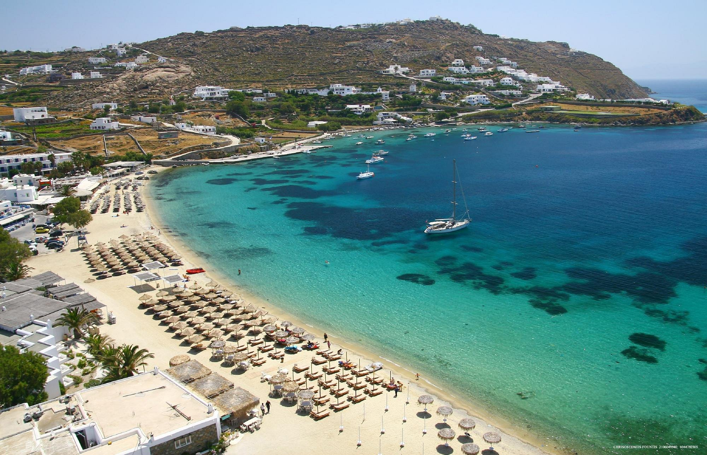
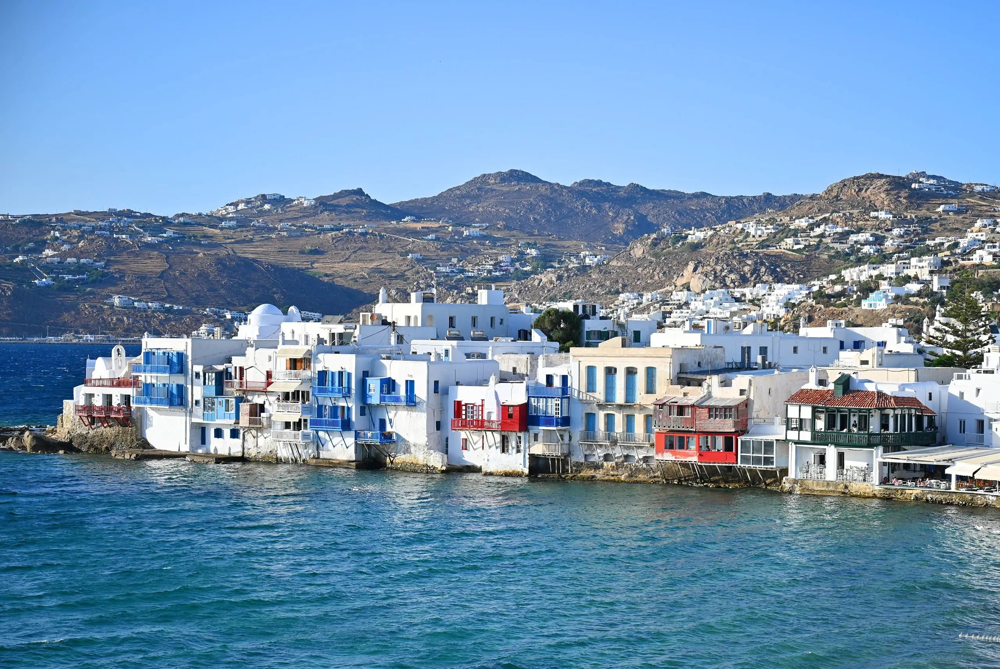
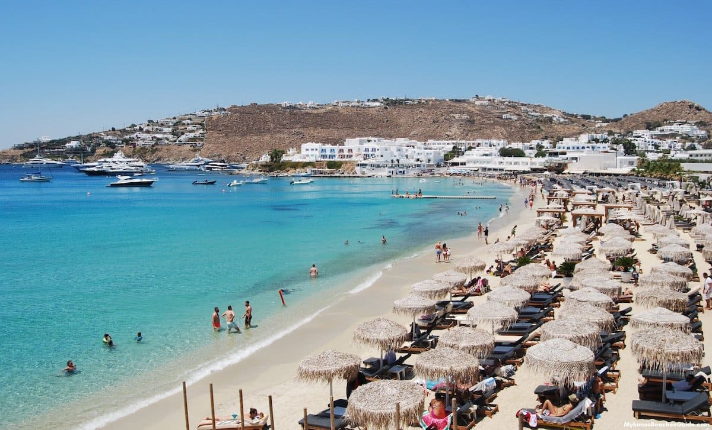

MYKONOS
Mykonos is known as the Greek party island – but it’s much more than that! As a member of the Cycladic island group, Mykonos boasts stunning beaches, boutique shopping, whitewashed buildings, luxury hotels, and vibrant beach clubs and nightlife.
Here are the top 3 spots on the island of Mykonos!



ORNOS BEACH
MYKONOS TOWN
PLATIS GIALOS
Ornos is one of the most popular beaches on Mykonos, located just 3km from Mykonos Town. Easy to get to by public bus, it’s a great choice for families.
Mykonos Town is ideal for travelers who want the island’s best nightlife, dining, and shopping. As the transportation hub of the island, the town makes a fantastic base to explore.
Platis Gialos is the best beach on Mykonos, roughly 5km southeast of the town. Beautiful with many restaurants, cafes, mini-markets, jet skis and other water sports rentals, and also many excellent hotels.